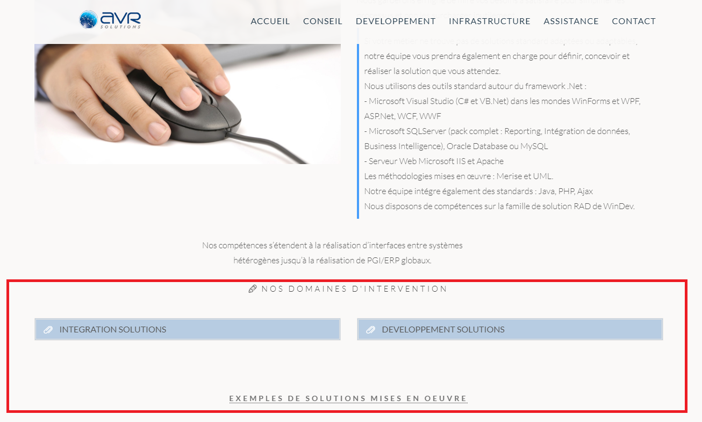
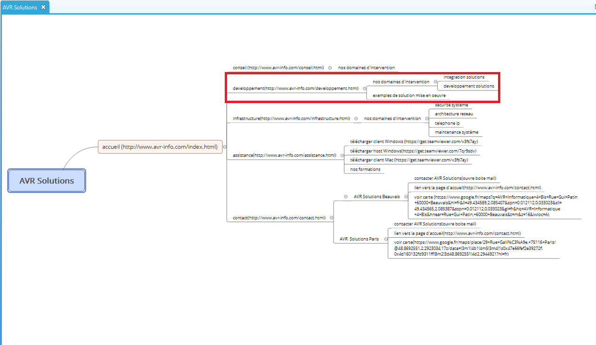
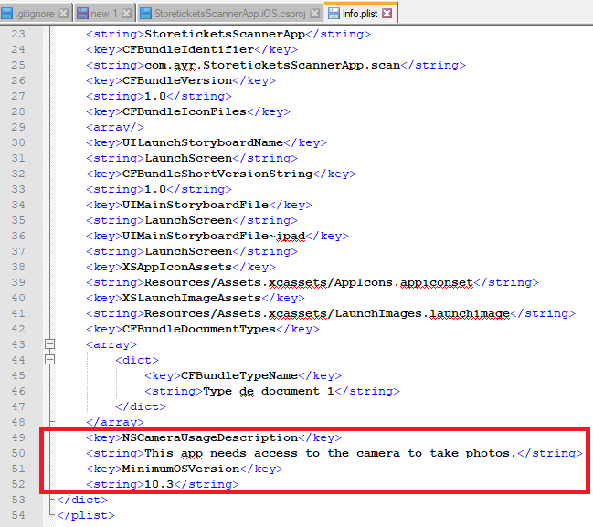

Stage deuxième année
BTS SIO Option SLAM
Stage deuxième Année
Mon stage de deuxième année s'est déroulé au sein de l'entreprise Avr Solutions, à Beauvais son siège social, et Paris. Voici les différentes missions que j’ai pu réaliser au cours de ce stage:
Recherche de l'existant
Analyse :
Dans cette première mission, j’ai analysé l’architecture du site web de l’entreprise « http://www.avr-info.com/ » afin de savoir qu’elle est le contenu des pages, sur qu’elle lien pouvons-nous aller etc… Pour avoir un exemple visuel, voici la page du menu « Développement » :
MindMap :
Le MindMap, appelé Carte Mentale, nous permet de représenter visuellement et de suivre le cheminement associatif des pages du site web. Sur la photo ci-dessus nous avons les « domaines d’interventions » avec deux boutons cliquable déroulant le contenu de « Développement » ou « Intégration » puis un lien cliquable contenant les exemples de solutions réalisées.
Sur le MindMap, la partie entourée représente la page « développement », contenant ces informations. On remarque que la page « développement » est la page mère avec pour enfants « les exemples de solutions mise en œuvre » ainsi que les domaines d’intervention aillant eux même deux enfants « Développement » et « Intégration ». Le reste de l’analyse de l’existant du site a été réalisé comme expliqué précédemment.
Application Xamarin :
AVR Solutions possède une application nommée « StoreTickets » utilisé afin de scanner des codes barre en se connectant puis par le choix d’un parc et d’un point de control. L’application est développée en C# avec Xamarin sur Visual Studio ; Xamarin, permettant de développé des applications mobiles natives pour les trois plateformes principale (Android, Windows Phone, IOS). L’application sera livrée seulement sur IOS et Android. La partie Android étant déjà développé, j’ai pu prendre exemple afin de développer la partie IOS. Les utilisateurs de StoreTickets sont des parcs d’attractions, des zoos etc….
Ajout des licences/signatures
Afin de tester et développer une application sur la plateforme IOS, un certificat d’un prix de 90 euros doit être en notre possession. Cependant, durant ma période de stage, le besoin étant seulement de tester l’application. Pour tester l’application sans la publier sur l’Apple store, un certificat de développeur suffira. Pour ce faire, il faut un Mac et un appareil sous IOS, dans mon cas, un iPhone 5 m’a était prêter ainsi que le Mac. Dans un premier temps, sur le mac, nous avons créer un projet sur « XCode ». Une fois le projet créer, il faut ajouter un Identifiant de Bundle et cocher la case de management automatique de la signature.

Une fois que le projet est créé et comprends une signature, il faut se rendre sur l’application afin de recopier cette signature dans le fichier nommé « info.plist » de la partie IOS. Il suffit de copier-coller l’identificateur dans l’info.plist de l’onglet « Application »

Une fois que l’identificateur du bundle est mis en place, l’application doit être lancée afin de d’accepter la liaison entre l’application et le mac. Le mot de passe de session est demandé sur le mac puis l’application se lance sur le périphérique sous IOS branché sur le mac.
Développement de la partie IOS
UneSachant démarrer l’application pour la tester, j’ai pu coder la partie IOS grâce à l’aide de la partie Android étant déjà développé. Dans l’application Xamarin, il y a trois parties, une partie commune aux deux interfaces, une partie IOS et une Android. Voici les scripts communs aux deux interfaces tel que la connexion ou encore les vues.

La partie a développé sur la plateforme IOS est la suivante. Ce script permet de stocker les identifiants dans le téléphone qui se chargent en toute sécurité de stockés des données dans un magasin de comptes qui est soutenu par les services Keychain dans iOS, et la classe KeyStore dans Android


Une fois ces deux étapes terminées, l’application fonctionnera et démarrera sur l’iPhone. Cependant, sachant que le scan du code barre utilise la caméra du téléphone et que les périphériques sous IOS bloque la caméra, j’ai ajouté ces lignes de codes afin que le téléphone accepte.
Ajout de l’icône de l’application
Dans cette mission, mon devoir étant d’ajouter un icone. Cette icone, est visible dans le menu. Pour commencer, on m’a fourni une image à définir en tant qu’icone de l’application, voici le logo choisi.

Une fois le logo à ma disposition, j’ai créé un nouvelle « Assets » dans les catalogue des composants puis un ensemble d’image destiné aux icones de l’application que j’ai nommé « AppIcons ». Voici, ci-dessous un asset vide, contenant des slots d’images à définir, selon les versions d’IOS ou de périphériques car la taille de l’icône ne sera pas identique partout. La résolution est indiquée dans le slot.
J’ai donc mis le logo sous plusieurs dimensions afin de les définir en tant qu’icone de l’application adaptés à leurs versions d’IOS.

Une fois les images définies aux bonnes résolutions, je l’ai ai insérer dans l’asset.

Maintenant que l’Asset est paramétré, j’ai défini dans le fichier nommé « info.plist » de la partie IOS, la source de l’icône de l’application, c’est-à-dire notre « AppIcons ». Cela permet d’annoncer à l’application de chercher les logos dans l’ensemble d’images « AppIcons ».

Pour finir, une fois l’application lancé, voici comment nous verrons l’icône de l’application Store Tickets.

Ajout du Launch Screen
Le launch screen, ou encore, écran de démarrage doit être mise en place. Tout comme l’icone il faut une image, un logo afin de le définir en tant qu’écran de démarrage, cette icone apparaitra lorsque l’application sera lancée. Voici le logo :

J’ai donc créé un plan conceptuel vide nommé « LaunchScreen.sotryboard » afin de créer graphiquement le launch screen.

Pour configurer l’écran de démarrage, il faut vérifier que l’application est bien connectée à un mac. La connexion de l’application est réalisée dans la première partit. J’ai ajouté un contrôleur de vue au Storyboard en en faisant glisser un depuis la boîte à outils vers la surface de conception :

Ensuite, j’ai configuré le background en noir dans les propriétés du vue contrôleur.

Enfin, j’ai ajouté le logo grâce à l’outil « view image » de la toolbox, puis je l’ai centré, voici le résultat.

Pour finir, il faut paramétrer « l’info.plist » afin que l’application sache qu’elle image utilisée lors du démarrage de l’application. Dans l’actifs visuel, il faut définir le launchScreen comme écran de lancement.

Voici ce qu’on obtient lorsque nous lançons l’application :

Test Fonctionnels
Durant mon stage, je me suis déplacé à Paris afin de rencontrer l’équipe qui s’occupe du projet sur lequel je vais effectuer des tests. L’équipe situé à Paris travaillent sur un logiciel, du moins un ERP appelé Gandalf. Un ERP (Enterprise Resource Planning) ou également appelé PGI (Progiciel de Gestion Intégré) est un système d’information qui permet de gérer et suivre au quotidien, l’ensemble des informations et des services opérationnels d’une entreprise. Dans mon cas, l’application Gandalf est développé pour « Metropolitan Filmexport » ; une entreprise basé sur l’exportation de film. Ma mission étant de réalisé des tests fonctionnels en JavaScript avec Nightmare.js. Nightmare.js est une bibliothèque de JavaScript permettant de parcourir le DOM et d’interagir avec.Il est très utile pour les tests car le but est d'exposer quelques méthodes simples qui imitent les actions de l'utilisateur (comme goto, type et click), avec une API qui semble synchrone pour chaque bloc de script. Dans Gandalf, une page spéciale est dédiée aux tests. Cette page réunie tous les composants tel que text, textarea, dropdown, timespan etc… ainsi que tous leurs états possibles comme disabled, actif ou encore read only. Voici une partie de cette page :

L'entreprise utilise un logiciel de travail collaboratif nommé « Confluence »C'est un logiciel commercial, développé par la compagnie australienne Atlassian en JAVA. Il m'a permis de voir l'état des tests, il y a plusieurs niveaux tel que « A migrer » pour les tests non terminés, «A vérifier » lorsque le test est fini est doit être vérifié par le chef de projet ou encore « todo » lorsque le test doit être réalisé entièrement. Ici, les composants a tester sont tous « A migrer ».

Afin de comprendre le site et comment fonctionnent les tests, j'ai commencé par réalisé les tests « A migrer » c'est à dire, les tests déjà écrit mais contenant des erreurs. Avant de commencer les tests, nightmare.js doit être installer via le terminale.

Dans l'inviter de commande ou le terminale de Visual Studio Code, il faut se placer sur le projet puis lancer les tests grâce a la commande suivante :

Voici à quoi ressemble l'index.js :

La méthode runTests permet d’appelé une page contenant des tests. Ici elle appelle les tests sur l'authentification, les composants, le menu et les panels. Pour commencer, je me suis occupé uniquement des composants, les autres seront donc en commentaire lors du lancement des tests. La méthode runTests lance la page qui s'occupent du lancement des tests sur les composants :

La première méthode consiste a ce rendre sur la page contenant tout les composants, la page test. Les pages contenant le tests des composants sont en commentaire. Les tests ciblés sont décommantés avant les tests. Le premier test réalisé avec mon tuteur concernait le menu.. Le test est simple mais permet de comprendre le principal, il est est lancé afin de voir quels sont les tests en erreurs. Un composant contient plusieurs tests, nous alllons nous concentré sur le seul en erreur :

On remarque qu'un test est en rouge, qu'il n'a pas renvoyer ceux a quoi on s'attend. Voici le code du test en erreur « Devrait revenir à la page d’accueil lorsque le menu est ouvert » :

Tout d'abord, tout les tests commencent par le mot « it », permettant de le considérer comme un test afin qu'il s’exécute lors du lancement. Cette méthode comprends deux propriétés. Un texte permettant de décrire l'objectif du test et le numéro du test(présent sur le site confluence résumant touts les tests) ainsi que (done) une fonction qui, lorsqu'elle est appellé affiche les erreurs du test et met fin au test. Pour pouvoir tester les composants et imiter les actions d'un utilisateur, un objet nightmare doit être instancier. Différentes fonctions sont disponibles. En effet, le .refresh va permettre de raffraichir la page, le .wait va permettre d'attendre un composant avant de passer a la ligne suivante, le .click permet de cliquer sur un composant. La méthode evaluate permet de récupérer les propriétés d'un composant (sa classe, sa taille...) pour être évaluer par la suite. Le .then permet lui, de confirmer si le test à bien fonctionner, il contient une méthode .expect qui permet de dire au test à quoi il doit s'attendre une fois fini. Dans ce test, la page est raffraichit. Le test attend le menu afin de cliquer dessus, puis il clique sur le logo qui redirige vers la page d'accueil afin d'attendre un élément spécifique de celel ci. Ensuite, il retourne l'url et évalue le nom de la classe de l'élément présent uniquement sur la page d'accueil . Puis il regarde si ce dernier contient bien le nom de classe « avr-active » qui montre qu'il est bien sur la page d'accueil. Enfin, il regarde si l'url retourné est bien égal à l'url de la page d'acceuil du site. Pour finir il appelle la méthode done() et le place dans la méthode .catch, permettant d'afficher les erreurs. Lors du lancement du test voici le message d'erreur obtenu :

Tout d'abord, le texte inscrit dans la fonction « it » lors des tests permet d'indiquer dans le cmd qu'elle test est en erreur. L'erreur nous explique que l'url attendu n'est pas égal a celle renvoyer pars le test. Ce qui est attendu (expected) est en vert, et l'actuel et en rouge. On remarque que l'url contient bien « app » mais elle est suivit d'une vue. Il suffirais de rajouter la vue et le numéro a la suite, cependant, les vue ne sont pas constante et le test ne sera pas toujours validé. Pour que l'url soit validé selon n'importe qu'elle vue, j'ai utilisé une regex.

Une regex, autrement appelé expression régulière est une chaine de caractères qui décrit selon une syntaxe précise, un ensemble de chaines de caractère possibles. J'ai créer une constante regex permettant de valider les url selon n'importe quelle vue. En effet , les parenthèse permettent de faire des groupes, de diviser l'url. Ici, on accepte n'importe qu'elle vue entre 1 et 9 grâce au momento « \d ». Puis dans la méthode expect, on s'attend a ce que l'url récupérée et la regex match, c'est à dire qu'elle soit égal. Voici le terminale une fois le test lancé :

On remarque que tout les tests sont validés, cependant, il y'a un un test en supend. Il apparaît en bleu, cela signifie que le test est suivit de la méthode .skip permettant de ne pas passer sur le test lors du lancement comme ci dessous :

Dans le cas de mon entreprise et de mon stage, on m'a expliqué que nous mettons un test est skip lorsque que le test agit sur une partit non développée ou encore que le test possède une erreur illogique demandant du temps à résoudre. Un commentaire doit être placé afin d'expliquer la raison du skip. Durant une dizaine de jours, j'ai enchaîné les tests à migrer. Le plus difficile dans les tests est de trouver le bon selecteur car nightmare.js n'accepte pas les id ou encore les classes, et lorsque nous testons la couleur d'un élément par exemple, le selecteur être celui qui contient le css avec la couleur.
Test "TODO"
Une fois avoir compris suffisamment comment fonctionnent les tests et comment je devais travailler, j'ai pu, jusque la fin du stage, créer les tests en état TODO c'est à dire ,encore non codé, en partant de zéro. Voici une page de test entière que j'ai réalisé sur le composant switch :


Durant mes tests, j'ai du créer des méthodes comme celle qui suit dans le fichier "common.js":

L'application Gandalf possède une fonctionnalités permettant de créer des vues, avec contenant des panels, cela permet a l'utilisateur de choisir le contenu de sa page d'acceuil. Afin qu'il n'y est pas de problèmes lors du test tel qu'une vue qui ne peut se créer car le nom de la vue existe déjà ou que la suppression ce fait sur le mauvais ; j'ai créer une méthode permettant de supprimer toute les vues. En effet, elle clique sur le pannel contenant les vues :

Puis va supprimer les vues jusqu'à temps qu'il y en est plus. Voici l'appelle de la méthode au début de la page de test des vues(Cette méthode doit être appellé comme un test):

Voici tout les tests que j'ai validé:


J'ai donc changé l'état des tests en "à valider", voici un exemple :

Git
GitHub est un service web d'hébergement et de gestion de développement de logiciels, utilisant le logiciel de version git. Mon tuteur ma créer un compte GitHub. Chaque fin de journée, mon code est poussé sur GitHub.La première semaine, j'ai travailler sur la branche de mon tuteur. Par la suite j'ai créer une branche « lucas » grâce à la commande « git branch lucas » afin de travailler de mon coter sans gêner mon collègue. Voici les commandes utilisés afin de commit est push:

Tout d'abord, le git « add . » permet de prévenir git que le projet sur lequel nous somme placé a été modifier et doit être prit en compte. Ensuite, le git commit -m « correction on widget panel » va faire une sauvegarde du code actuel, il va en quelque sorte le prendre en photo. Un commit est toujours suivit d'un message afin d'éxpliquer ce que j'ai modifié par rapport au dernier commit. La commande « git status » me permet de voir quel fichier ai-je modifié depuis le dernier commit. En voici un exemple :

Une fois le commit est réalisé, je réalise un « git push origin lucas » pour pousser le code de ma branche lucas sur GitHub afin que mon équipe puisse commenter et regarder mon code. Lorsque mon tuteur modifiait également le code de la branche JB, je devais récupérer le code, pour cela j'ai utilisé la commande suivante :

Cette commande permet de mettre à jour le répertoire de travail local avec les données du repository distant. Cependant on remarque plusieurs conflits. En effet, si dans l'un des scripts tiré du repository, une ligne de code différente de la mienne , cela créera un conflit. Si par exemple, à la ligne 4 de mon code , j'affiche bonjour, et que le code tiré lui affiche bonsoir, alors il faudra résoudre le conflit. Pour résoudre les conflits, je vais sur Visual Studio afin de choisir quel code garder parmi ceux en conflits. La résolution des conflits ce sont fait avec mon tuteur par appel skype. Voici un visuel graphique des conflits sur Visual Studio.

Les scripts à gauche et à droite sont les codes en conflit, il suffit de cocher le bloc que je veux garder. Le script en bas prend en compte la modification selon le code coché.
GitHub
GitHub est un service web d'hébergement et de gestion de développement de logiciels, utilisant le logiciel de version git. Mon tuteur ma créer un compte GitHub. Chaque fin de journée, mon code est poussé sur GitHub.

A partir de la, le chef de projet regarde mon code afin de le récupérer si il lui convient ou de laisser un commentaire sur GitHub afin de savoir ce que je dois modifier dans le code. Voici son commentaire :

Une fois avoir modifié le code en fonction du commentaire et l'avoir pousser de nouveau sur GitHub. Je dois laisser un commentaire annonçant que les modifications sont bien terminés.